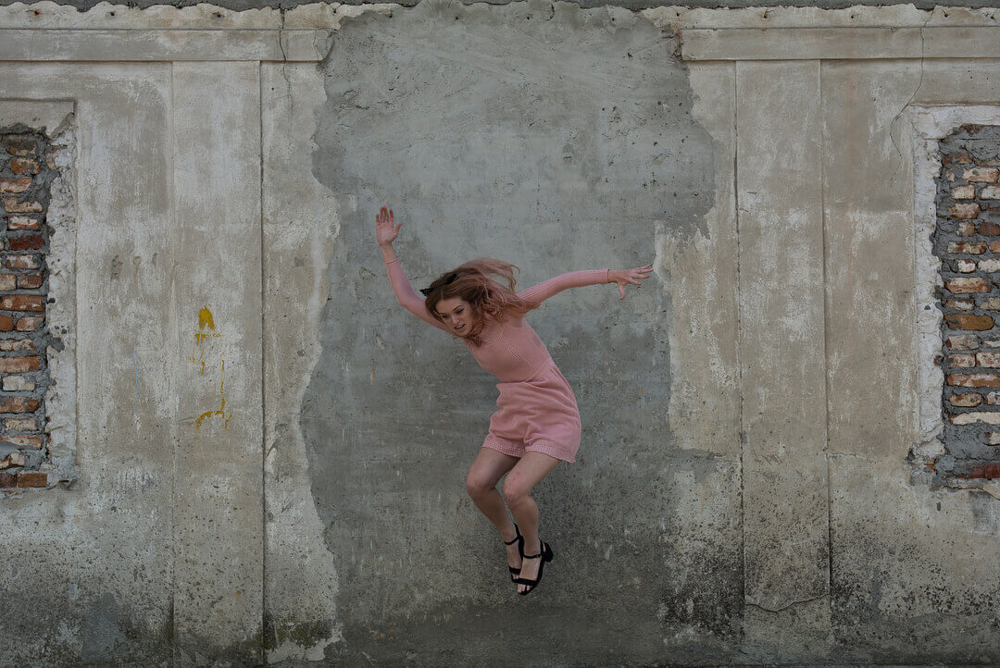
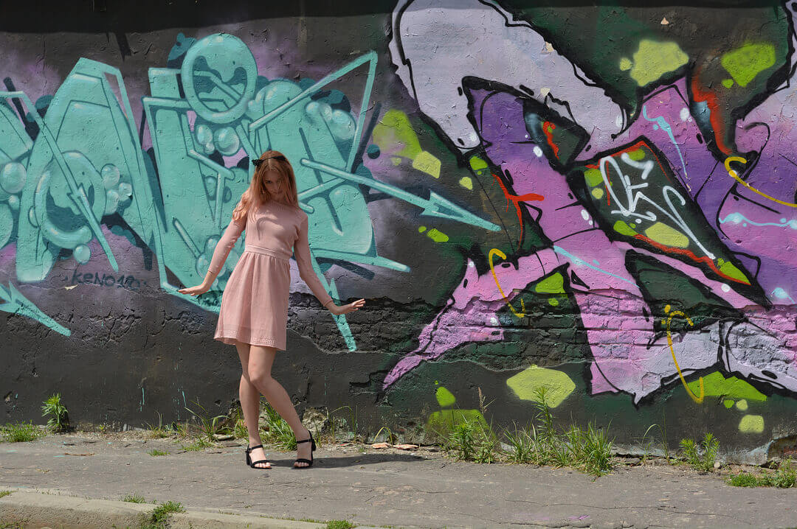
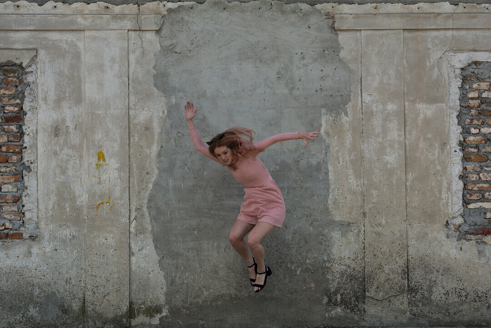
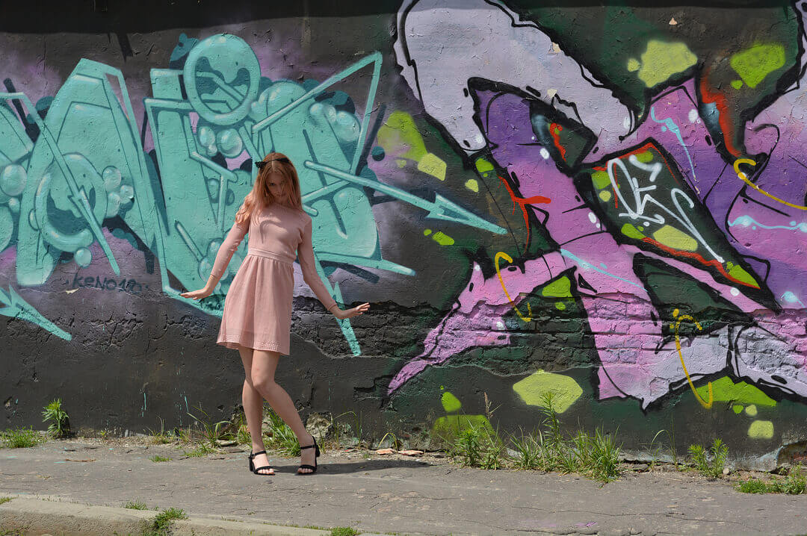

My Name is Daria 🌈
I was born at beautiful Ukrainian city called Lviv. I've traveled and moved a lot. I also lived in Kyiv until a Revolution of Dignity began. My apartment was a kilometer away from all events so it was scary to live. We also lived on the first floor. You never know when the bomb hits you in the window, right? We moved back to Lviv and lived with my grandmother. Fortunately she found an extra room for us. Since now is June 2018, I can safely and exhilarately announce that I finally completed my school education. (YAAAY!). To be frank, I have never studied well. Even worse than an average student. My life outside the school is much more interesting than their, I hope. When I was 14 I began to act in night clubs as a DJ. So.... interested? Scroll down)
🌸 🌸 🌸
 


